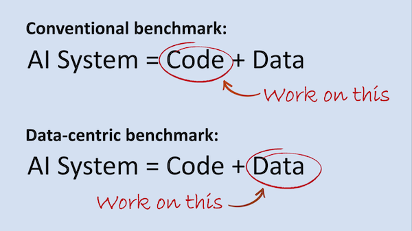

Thoughts about differences in ML evaluation for Academia and Industry
How different are the strategies for training/testing a Machine Learning (ML) model for Academia/Science and Industry? Recently, I realized that the concepts behind the Expected generalization error (\(Err\)) and Conditional generalization error (\(Err_{xy}\)) discussed by Tibshirani and Hastie in ESL could provide us with a possible explanation about the differences approaches followed by Academia and Industry.
As mentioned in the ESL:
\(Err\) is the average generalization error for a model trained with different datasets coming from the same distribution.
\(Err_{xy}\) is the generalization error for a model trained with a particular dataset.
Academia/Science is usually more interested in knowing how a model would behave on other scenarios than the observed. In Academia, we are normally interested in knowing how well a particular algorithm would generalize when other datasets are used. When a new algorithm is developed, we want to compare this new algorithm against the state of the art in all the possible scenarios. That is why we use resampling techniques such as Cross Validation (in all its flavors), bootstrapping, etc. All these resampling techniques provides us with the expected error \(Err\). In this case, the contribution is the proposed algorithm and the idea is that everyone will use it later with his own dataset.
In the Industry, on the other hand, we are interested on how an algorithm performs on the specific problem we want to solve. From the available data, we will try to obtain the best possible result for a given algorithm. Given a particular problem, we aim at solving it in the better possibly way respecting the constrains we have (money, time, etc.). Here, the contribution will be a working product that solve the problem. We are not interested in proving that it is the best algorithm, we just want the algorithm do the job.

Figure 1. Data-centric vs model-centric approaches (stolen from Ng’s Batch newsletter)
The previous paragraph is consistent with the strategy proposed by Andrew Ng in his book Machine Learning Yearning where Crossvalidation is not used to adjust the model. The model performance is always evaluated with the same data. According to Ng, training should done with data from a different distribution to validation and testing (dev and test sets according to Ng). The workflow consists of getting more data (if available) and improving the quality of the data (adjusting data and retraining until we have an acceptable quality). This is what Ng calls a data-centric approach (see Figure 1). There, the model remains fixed (after a reasonable parameter tuning), and all the focus is put on improving data quality. I personally think this workflow is more related with the \(Err_{xy}\). For a particular dataset, what will be the estimated generalization error? That is the question we want to resolve in the Industry.
Please keep in mind that previous claims do not mean Industry is not interested in the \(Err\). In the first stage of a project, several algorithms could be considered and evaluated using resampling strategies and analyzing the \(Err\) between them. But, to be honest, a general thought in Industry is that given a good dataset, almost all algorithms will work reasonably well 😆.

This practical approach followed by the Industry, could be explained by the difficulty of comparing the performance of different algorithms. The truth is that comparing two algorithm is not that easy. It is simple to visualize differences for several algorithms on a given metric, however if we want to provide some sort of statistical arguments, things turn ugly. If we want to confirm the statistical significant of our results, there is no widely accepted methodology when using resampling techniques. In resampling techniques such as (K-fold Cross validation, Bootstraping, MonteCarlo Cross Validation, etc.), we will have repeated examples. Then, the independence (between samples) assumption will not hold and most of the statistical frameworks used wont be adequate 😔 .
…a general thought in Industry is that given a good dataset, almost all algorithms will work reasonably well…
For years I have been using the man-withney U test for comparing the performance of two algorithms and recently I realized it is not the best option. The test assumes independence between samples and as I said before, it is not the case for resampling techniques.
Moreover, the problem of resampling techniques go beyond comparing two algorithms. Very often, we will need to have an idea of the range of the error values shown by the model in other scenarios (\(Err\)). In other words, we want to obtain the interval confidence (IC). Unfortunately, obtaining such intervals suffers from the same problems mentioned when statistical comparing two algorithms.
The good news are that a lot of very intelligent people is working to provide us with a solution to the issue. The articles below are just a glimpse of the research done on this topic. I strongly recommend reading the first one (Diettrich 1997). The article is one of the first in discussing the problem of resampling techniques for estimating the true generalization error.
Two classical articles:
[1] Approximate statistical tests for comparing supervised classification learning algorithms, (Diettrich, 1997)
[2] Inference for the Generalization Error, (Bengio, 2003)
More recent works:
[3] Cross-validation Confidence Intervals for Test Error. NIPS 2020 (Pierre Bayle, 2020)
I have already mentioned this paper, and I think it worth reading even it is a preprint.
[4] Cross-validation: what does it estimate and how well does it do it? Preprint (Tibshirani, 2021)
Some final words…
One thing is clear, Industry and Academia have different approaches for building ML models. That’s not bad at all. It have always been the same. It seems logical since they pursue different objectives. However, I’m pretty sure Industry takes a look to the things and methods used by the Academia, but I’m afraid the opposite is not always true. I recognize it is difficult and not always possible, but this is something we try to do at LABSIN.